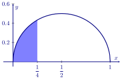
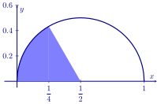

In this activity we investigate a generalization of the binomial theorem and its connection to an approximation of
.
The binomial theorem states Why would we be interested in this?
Newton says How did Newton come up with this? Hint: Calculus!
Come up with a function of for the semicircle of radius centered at .
Use Newton’s binomial theorem to show your function above is equal to:
Use calculus to compute the area of the shaded region:

Use proportional reasoning to compute the area of the sector below:

Use the previous problem, along with the area of a certain 30-60-90 right triangle to give a different computation of
the area below.
Use your work from above to give an approximation of .